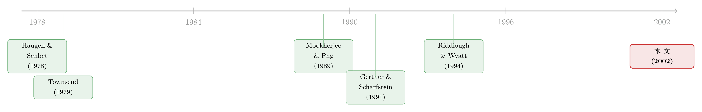

银行为什么宁可掷骰子，也不肯跟你好好谈？——止赎里那台『随机拒绝机』
本文读的是 Wang, Young & Zhou (2002, Review of Financial Studies)：当一家银行同时面对成千上万个可能违约的借款人时，随机地、不分青红皂白地拒绝一部分贷款重组请求，可能恰恰是它的最优策略。止赎不是谈判破裂的意外，而是一种被精心算过的「概率配给」——而这个最优接受率，与清算成本同向、与违约收益反向。
1 一个老问题，和一个不太对劲的事实
先抛一个困扰了金融学几十年的问题：既然破产和清算对借款人和债权人双方都是有代价的，那为什么清算还会发生？
按照最朴素的逻辑，它不该发生。Haugen 和 Senbet（1978）早就说过：只要催收是有成本的，债权人就该主动减免债权、跟借款人和解，把那笔白白烧掉的破产成本省下来。顺着这个逻辑推下去，清算只应该在一种情形里出现——拆掉的资产卖出去比公司继续经营更值钱。换句话说，只要还有合作剩余，理性的各方就该坐下来谈。
于是后来的文献忙着解释「为什么谈不拢」。Bulow 和 Shoven（1978）说是各方利益冲突、信息不对称；Giammarino（1989）说是经理比债权人更了解公司价值，逼出了昂贵的仲裁；Gertner 和 Scharfstein（1991）说是债权人太多，每个人让一步、好处却被大家分享，于是谁都不肯先让步（这就是经典的搭便车问题）；Chemmanur 和 Fulghieri（1994）则说，要看债权人是不是银行——银行有声誉、愿意花力气评估困境公司，而分散的公债持有人不愿意。Gilson、John 和 Lang（1990）的数据也确实支持：欠银行越多的公司，重组成功率越高。
把这几条线拼起来，文献给出的「谈不拢」清单很清楚：(1) 信息不对称、(2) 债权人太多、(3) 债权人不是银行。
可是，按揭市场（mortgage market）偏偏把这张清单上的三条全划掉了。借款人是房主，债权人是银行，两边都拿着同一份独立评估报告、看同一批可比成交，对房产价值的判断不会差太多——信息不对称这条没了。一笔按揭通常只对应一个债权人——债权人太多这条也没了。债权人就是银行——第三条还是没了。
那么按照文献，银行理应比谁都更愿意跟违约的房主好好谈、而不是去止赎。然而现实恰恰相反：Riddiough 和 Wyatt（1994:299）观察到，面对按揭违约，大量贷款人态度强硬，根本不愿意给重组让步。德州 1984、加州 1990，成片成片的房子被止赎。
文献的清单全划掉了，止赎却照样大规模发生。问题出在哪？
2 真正的张力：一个债主，对上一群可能赖账的人
这篇文章给出的答案，关键不在「信息」也不在「协调」，而在一个被前人忽略的结构：
以往的模型问的是——一家困境公司，面对多个债权人，该怎么协调？ 这篇文章反过来问——一个债权人，面对一大群潜在的违约者，该怎么应对？
这个视角的转换是全文的枢纽。一旦你站到那个同时盯着上万套房子的银行的位置上，你今天对张三的处理方式，会被李四、王五看在眼里，并改变他们明天要不要也来「闹一闹」。于是银行的决策不再是一桩一桩孤立的谈判，而是一场对整个借款人群体的博弈。
为了把这件事讲清楚，作者把借款人分成了两类：
- 困境借款人（distressed borrower）：无论银行谈不谈，他都会违约。要么是真的还不起，要么是房子早已资不抵债、违约的好处盖过了坏信用记录的代价。
- 非困境借款人（nondistressed borrower）：他还得起月供，违约对他并不划算（坏信用记录加上税负，超过了房子和贷款之间那点差价）。但是——如果他相信银行很可能会给他减免，他就有动机假装成困境借款人，去骗一笔减让。作者给这种人起了个很传神的名字：伪装者（pretender）。
银行的麻烦在于：不花钱，它分不清谁是真困境、谁是伪装者。 花钱去甄别，就要付一笔筛查成本（screening cost）\(C\)。
而硬币的另一面是：对伪装者来说，申请重组本身也是有代价的。 你得先拖欠几期月供、留下一个（虽然没止赎那么严重的）late payment 记录、搭上跟银行的关系、再忍受谈判的麻烦。所以伪装者会精打细算——只有当他相信「申请了真有机会获批」时，他才会来申请；如果他确信银行要么会筛查、要么大概率会拒，他干脆就乖乖把月供补上，根本不来。
这是整篇文章的发动机：伪装者的参与，取决于他对银行政策的预期。 而银行恰恰可以反过来操纵这个预期。
（关于「战略性违约」和银行手里压着止赎房产不卖这一组现象，可参见《止赎来的那栋楼，银行为什么按着不卖？》；本文与它互为表里——那篇问止赎之后的火线甩卖，这篇问止赎之前的「拒不拒」。）
3 模型：把「随机拒绝」一步步算出来
接着，一个自然的问题是：银行手里到底有哪些牌？作者把它写成一个混合政策（mixed policy）\((\phi,k)\)：
- 以概率 \(\phi\) 去筛查这份申请（screening policy），花掉成本 \(C\)，从而看穿对方是真困境还是伪装者；
- 以概率 \(1-\phi\) 不筛查，转而用随机拒绝政策（random rejection policy）：以接受率 \(k\) 答应重组、以 \(1-k\) 直接拒绝（拒绝意味着对真困境者止赎、对伪装者则把他逼回去补月供）。
记号约定：\(B\) 是按揭余额，\(V\) 是房产市值，\(L\) 是清算净值，且 \(B>V>L\)。于是 违约收益（default benefit） 是 \(B-V\)，清算成本（liquidating cost） 是 \(V-L\)。借款人被建在单位区间 $[0,1]$ 上，\([0,\delta)\) 是困境者、\([\delta,1]\) 是非困境者，\(\delta\) 是困境者占比。
3.1 谁会来申请？——一条决定一切的参与约束
第一步，也是最关键的一步：伪装者 \(t\) 申请重组的期望收益是
$$A(\phi,k,t) = (1-\phi)\,k\,(B-V) - w\,t$$
其中 \(w\,t\) 是伪装者 \(t\) 发起申请的私人成本（\(w\) 为最高成本，\(t\) 是他在区间上的位置，成本是他的私人信息）。这个方程虽然简单，却把全文的机制一口气讲完了——我们把它拆开来标注一下：
伪装者只有在 \(A(\phi,k,t)>0\) 时才会申请。盯着 \(a1\) 看：银行不需要去甄别每一个人，它只要把 \((1-\phi)k\) 这个「最终获批概率」压低，就能让一批本来想浑水摸鱼的伪装者自己算完账、知难而退。这就是「随机拒绝」之所以有用的全部秘密——它不是在惩罚谁，而是在改变所有人事前的算盘。
第二步，定义当银行完全不筛查（\(\phi=0\)）、且来者不拒（\(k=1\)）时，申请重组的借款人占比的上限：
$$\bar{\delta} = \frac{B-V}{w} \le 1$$
于是实际申请重组的比例 \(\delta(\phi,k)\) 介于 \(\delta\)（只有困境者）和 \(\bar\delta\)（伪装者全来）之间：
$$\delta(\phi,k) = \max\{\delta,\ (1-\phi)\,k\,\bar{\delta}\}$$
这条式子把 \(a1\) 的直觉量化了：银行越是收紧 \((1-\phi)k\)，跑来申请的伪装者就越少，申请池就越「干净」。
3.2 银行的两本账
第三步，算银行的收益。如果银行筛查一份申请，它能看穿对方：认出伪装者拿回 \(B\)、认出困境者拿回 \(V\)，但两种情况都得付 \(C\)。按申请池里伪装者占比 \(\tfrac{\delta(\phi,k)-\delta}{\delta(\phi,k)}\)、困境者占比 \(\tfrac{\delta}{\delta(\phi,k)}\) 加权：
$$g_1(\phi,k) = \frac{\delta(\phi,k)-\delta}{\delta(\phi,k)}\,B + \frac{\delta}{\delta(\phi,k)}\,V - C$$
如果银行用随机拒绝：以 \(k\) 接受（拿到市值 \(V\)），以 \(1-k\) 拒绝——拒到伪装者就拿回 \(B\)（他乖乖补款），拒到困境者就只能清算、拿回 \(L\)：
$$g_2(\phi,k) = kV + (1-k)\left[\frac{\delta(\phi,k)-\delta}{\delta(\phi,k)}\,B + \frac{\delta}{\delta(\phi,k)}\,L\right]$$
这里就看出银行的两难了：随机拒绝省下了筛查成本 \(C\)，但代价是它会「误伤」——拒错了真困境者，就白白吃下 \(V-L\) 的清算损失；接受了伪装者，又损失了本可以收回的 \(B-V\)。
把两本账按筛查率 \(\phi\) 混合，再加上那些「想了想干脆不申请」的人（对这部分人银行收回 \(B\)），得到银行的总期望收益：
$$g(\phi,k) = \phi\,g_1(\phi,k) + (1-\phi)\,g_2(\phi,k)$$
$$G_0(k,\phi) = \delta(\phi,k)\,g(\phi,k) + \big(1-\delta(\phi,k)\big)\,B$$
银行要做的，就是选 \((\phi,k)\in[0,1]^2\) 去最大化 \(G_0\)。
3.3 反转：最优解里，真的有「掷骰子」
然后，真正关键的一步来了。作者证明，整个参数空间会被 \(B-V\)（违约收益）和 \(V-L\)（清算成本）的相对大小，恰好切成三块互斥且穷尽的区域：
$$\text{(1)}\ \ B-V \ge V-L\,;\qquad \text{(2)}\ \ B-V \le \frac{\delta}{2\bar\delta-\delta}\,(V-L)\,;\qquad \text{(3)}\ \ \frac{\delta}{2\bar\delta-\delta}\,(V-L) < B-V < V-L$$
而 Proposition 1 给出的结论里，最有意思的是中间那块（情形 3）：当违约收益和清算成本都不算极端、又特别是当筛查成本 \(C\) 足够高时，银行的最优政策既不是老老实实筛查每一个人，也不是来者不拒，而是放弃甄别、以一个内点的接受率 \(k\) 去随机地接受/拒绝。于是市场上会出现一种乍看毫无道理的景象：重组与止赎同时存在，而一个借款人最终是被救还是被赶，竟然与他真实的财务状况无关——纯粹是运气。
更妙的是那个比较静态（comparative statics），它是全文最干净、最可检验的论断：
最优接受率 \(k^\*\) 与清算成本 \(V-L\) 同向，与违约收益 \(B-V\) 反向。
直觉非常顺：清算成本越高，银行越怕「误伤」真困境者，于是越舍不得拒、\(k^\*\) 越高；而违约收益越大，每接受一个伪装者就被薅得越狠、伪装者的诱惑也越强，银行必须把 \(k^\*\) 压得更低，才能在事前把这群人吓退。
最后，作者还把模型推进了一步：第二个模型里，借款人看不见银行的政策（看不到 \(\phi\) 和 \(k\)）。结论是，政策越不透明，银行越倾向于采用随机拒绝——因为当借款人无法直接观测你到底在不在筛查时，那道「不可观测」的迷雾本身就成了吓退伪装者的额外武器。
这就解释了开头那个不对劲的事实：按揭市场把信息不对称、债权人过多、非银行债主这三条全划掉了，止赎却照样发生。因为止赎从来不是一桩谈判的失败，而是一个债主在面对一群人时，刻意留下的、用来维持威慑的「随机噪声」。
4 文献脉络
把这篇文章放回它生长的那条藤上，会看得更清楚。
最早的那一端，是 Haugen 和 Senbet（1978）那个「清算本不该发生」的基准——它定义了整个困境解决（resolution of financial distress）文献要回答的谜。紧接着，一支队伍去解释「为什么谈不拢」：Bulow 和 Shoven（1978）的利益冲突、Giammarino（1989）的信息不对称与昂贵仲裁、Gertner 和 Scharfstein（1991）的多债权人协调与搭便车、Chemmanur 和 Fulghieri（1994）的银行声誉。它们共同的舞台，都是一家公司面对多个债主。

与此平行的，是另一条看似不相干、却最终被这篇文章接了过来的暗线——代价高昂的状态验证（costly state verification）。Townsend（1979）开了头，Mookherjee 和 Png（1989）则证明：对保险理赔或税务申报进行随机审计，可以是最优的验证策略。这篇文章在精神上正是它的「信贷版」——把「随机审计」翻译成了「随机拒绝」。
真正的近邻是 Riddiough 和 Wyatt（1994）：他们第一个把「按揭违约里银行为何态度强硬」写成模型，让银行通过拒绝一个人来减少其他人的重组请求。但他们的世界里只有一类借款人、没有筛查成本、拒绝即自动止赎。这篇文章把它做厚了——两类借款人、一笔筛查成本、一份会算账的申请成本，于是「随机拒绝」从一个附带现象，变成了一个被一阶条件顶出来的最优解。
这条脉络上，本文的位置很清楚：它把「困境解决」文献的提问方向掉了个头（从「多债主对一公司」变成「一债主对多借款人」），又把「随机审计」的洞见搬进了信贷市场。这两个嫁接点，恰恰是它的贡献所在。
（关于「在信贷市场里筛进与筛出是两种本事」这个更现代的回声，可参见《信贷市场的「火眼金睛」》；关于「好心的减免如何反而逼出说谎的债务人」，可参见《好心的政策，逼出了说谎的债务人》。）
5 评论与延伸（Q&A + 研究方向）
(a) 几个可能的疑问
Q：这个「随机拒绝」和 Mookherjee–Png 的「随机审计」到底有什么区别？
区别在「随机」作用的对象。随机审计是在核实环节掷骰子——抽查谁的申报是真的；而这里的随机拒绝发生在处置环节——压根不去核实，直接用一个接受率 \(k\) 去随机批/拒。前者靠「可能被查出来」威慑，后者靠「申请了也未必有用」把人事前劝退。精神同源，机制不同。
Q：随机拒绝会误伤真困境者、白白吃下 \(V-L\)，凭什么还是最优？
因为它省下的是对每一个申请人都要付的筛查成本 \(C\)。当 \(C\) 足够高、且违约收益与清算成本都不极端时，「省下大量 \(C\)」带来的好处，盖过了「偶尔误伤、吃几笔 \(V-L\)」的损失。这正是为什么模型反复强调「筛查成本足够高」是随机拒绝登场的前提。
Q：既然信息对称，借款人不就知道自己被随机对待了吗，威慑还成立吗？
成立，而且这正是巧妙之处。威慑不依赖「骗过」借款人，而依赖把事前的获批概率 \((1-\phi)k\) 压低。伪装者完全理性地知道自己面对的是一台骰子机，但正因为他算得清——获批概率太低、不值得搭上申请成本——他才选择不来。第二个模型更进一步：连政策都看不见时，威慑反而更强。
Q：那对真正还不起钱的困境者，这岂不是很不公平？
是的，而这恰是模型一个略显冷酷的含义：最终被救还是被止赎，可以与你的真实财务状况完全无关。银行牺牲了一部分「该救的人」，换取对整个伪装者群体的威慑。这也提示了一个监管视角——禁止「不分青红皂白的止赎」未必提升效率，因为那道随机性本身在替银行省钱、也在压低对所有借款人的均衡剥削。
Q：把这套逻辑搬到公司债/信用市场，会不会水土不服？
部分会。模型最贴合的场景是「一个债主面对一大群同质的潜在违约者」——零售按揭、小微企业贷款、消费信贷。公司债是反过来的（一个发行人对多个分散债主），更像 Gertner–Scharfstein 的世界。但在银团贷款的牵头行、或集中持有大量同类高收益债的基金/CLO那里，「一个债主对多个借款人」的结构会重新出现，随机拒绝的逻辑就值得一试。
Q：经验上怎么检验「接受率与 \(V-L\) 同向、与 \(B-V\) 反向」？
这正是模型留下的可检验缺口。可以用按揭重组的微观数据，把 \(V-L\) 用房产的「可再配置性 / 流动性」代理（商业地产 vs. 特殊用途物业），把 \(B-V\) 用贷款价值比代理，看银行的重组批准率是否随之上下。难点是要控制住借款人真实违约概率的内生选择。
(b) 几个可能的研究问题与提案
1. 银团贷款里的「随机拒绝」——把模型搬到企业信贷
【经济故事】牵头行（lead arranger）在一个行业下行期会同时面对几十家想要 amend-and-extend 的借款企业。若展期能被轻易模仿，「假困境」企业就会扎堆来谈。牵头行是否会用一种近似随机的强硬，来吓退搭便车的展期请求？ 【可行性】中。数据可用 DealScan + 借款人财务（Compustat）。识别上可用行业冲击作为困境外生来源，比较「软信息」可得性不同的牵头行的展期批准率离散度。挑战是展期决策的多债主协调会污染「单一债主」的干净结构。
2. 评级机构/CLO 集中持有下的随机化清偿
【经济故事】当一只 CLO 或一家保险公司集中持有大量同类高收益债，它就从「分散债主之一」变成了「一个面对多借款人的债主」，本文的威慑逻辑随之激活。集中持有是否系统性地降低了重组率、抬高了违约处置中的「随机性」？ 【可行性】中。可用 eMAXX/NAIC 的债券持有数据刻画持有集中度，匹配违约后的重组 vs. 清算结局。识别需处理「持有集中本身可能内生于债券质量」。这条线天然连向《谁在持有这张债券，决定了它的价格》的持有人视角。
3. 政策透明度与威慑——一个准自然实验
【经济故事】模型预测「政策越不透明，越倾向随机拒绝」。现实中，监管对按揭服务商重组规则的强制披露（如某些 servicer 标准化、公开化）恰好提供了「透明度外生上升」的冲击。披露之后，重组批准的随机性是否下降、伪装者申请是否增多？ 【可行性】高。可用 HMDA + servicer 层面的政策变更时点做双重差分 (difference-in-differences, DiD)。处理组是被新规要求披露重组政策的服务商，结果变量是重组批准率的可预测性。数据公开、识别清晰，是这三个里最 doable 的。
我的判断
这篇文章最漂亮的地方，是那个视角的掉头：把「多债主对一公司」翻成「一债主对多借款人」，一下子让一堆「文献清单全划掉了、止赎却照样发生」的反常事实变得自洽。它告诉我们，止赎的普遍存在不必归因于信息或协调的失败，而可以是一个理性债主维持群体威慑的副产品——这是个真正反直觉、又能被比较静态检验的洞见。
但我对它的识别（更准确说，对它的经验落地）有两点保留。其一，模型的全部张力压在「申请成本 \(w\,t\)」和「筛查成本 \(C\) 足够高」这两个假设上；现实中按揭重组的申请成本到底有多高、银行的筛查成本结构长什么样，文章只给了 Curry–Blalock–Cole（1991）那条「止赎成本轻易超过房产价值 10%」的间接证据，缺乏对 \(C\) 本身的刻画。其二，模型预测的核心是一个纯随机的接受率，但现实里被拒的人和被批的人，财务特征往往系统性地不同——要把「真随机」从「按某个未观测变量排序后的确定性拒绝」中干净地分离出来，是一道不小的经验难题。
我接下来最想看到的，是有人真的拿按揭重组的微观数据，去检验那条「\(k^\*\) 与清算成本同向、与违约收益反向」的比较静态——如果它在数据里站得住，这个 2002 年的纯理论模型，就会从一个优雅的可能性，变成一条关于信贷处置的经验规律。
参考文献
- Bulow, J., and J. Shoven (1978). The Bankruptcy Decision. Bell Journal of Economics 9, 437–456.
- Chemmanur, T. J., and P. Fulghieri (1994). Reputation, Renegotiation, and the Choice between Bank Loans and Publicly Traded Debt. Review of Financial Studies 7, 475–506.
- Curry, T., J. Blalock, and R. Cole (1991). Recoveries on Distressed Real Estate and the Relative Efficiency of Public versus Private Management. AREUEA Journal 19, 495–515.
- Gertner, R., and D. Scharfstein (1991). A Theory of Workouts and the Effects of Reorganization Law. Journal of Finance 46, 1189–1222.
- Giammarino, R. M. (1989). The Resolution of Financial Distress. Review of Financial Studies 2, 25–47.
- Gilson, S., K. John, and L. Lang (1990). Troubled Debt Restructuring: An Empirical Study of Private Reorganization of Firms in Default. Journal of Financial Economics 25, 315–353.
- Haugen, R. A., and L. W. Senbet (1978). The Insignificance of Bankruptcy Costs to the Theory of Optimal Capital Structure. Journal of Finance 33, 383–393.
- Mookherjee, D., and I. Png (1989). Optimal Auditing, Insurance, and Redistribution. Quarterly Journal of Economics 104, 399–415.
- Riddiough, T. J., and S. B. Wyatt (1994). Wimp or Tough Guy: Sequential Default Risk and Signaling with Mortgages. Journal of Real Estate Finance and Economics 9, 299–321.
- Shleifer, A., and R. W. Vishny (1992). Liquidation Values and Debt Capacity: A Market Equilibrium Approach. Journal of Finance 47, 1343–1366.
- Townsend, R. M. (1979). Optimal Contracts and Competitive Markets with Costly State Verification. Journal of Economic Theory 21, 265–293.
- Wang, K., L. Young, and Y. Zhou (2002). Nondiscriminating Foreclosure and Voluntary Liquidating Costs. Review of Financial Studies 15(3), 959–985.